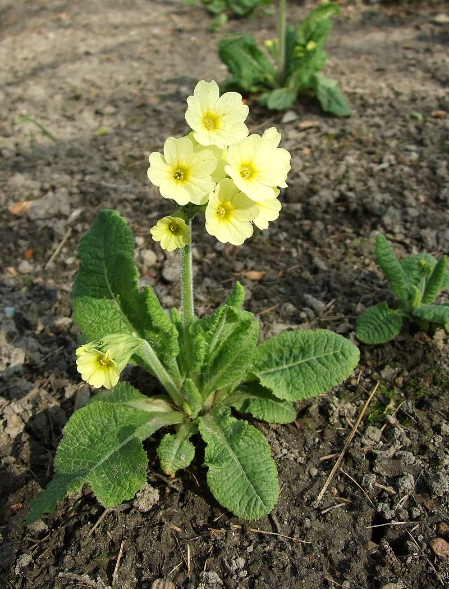
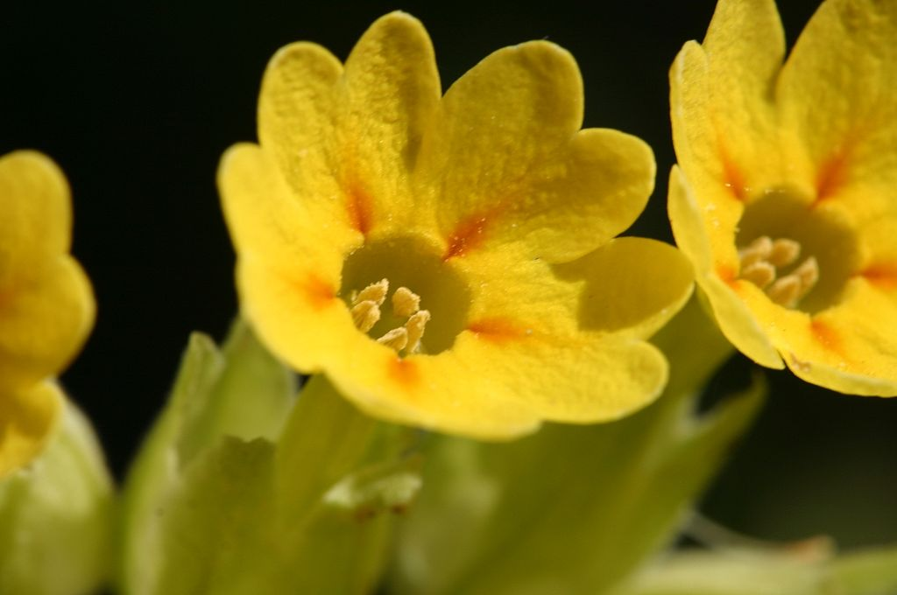

Про цветочки и не только!
Телефон: 89169996768
Почта: nimi9992@mail.ru

Всё, что вы хотели знать,
но боялись спросить,
про домашние растения!
но боялись спросить,
про домашние растения!
Про цветочки и не только!
Телефон: 89169996768
Почта: nimi9992@mail.ru
Первоцвет
Описание
Представители рода первоцвет — многолетние, реже двулетние и однолетние травы. Листья цельные, образуют прикорневую розетку. Листья морщинистые и покрыты волосками. Цветки пятичленные, правильной формы, разнообразных расцветок и оттенков, одиночные или собраны в кистевидные или зонтиковидные соцветия на концах безлистных стеблей. Плод — коробочка.
Особенности
Летом растение нуждается в тени и влаге. С возрастом стержневидный корень сильно удлиняется, поэтому его следует укорачивать. Часто выращивается в традиционных глиняных горшках.
